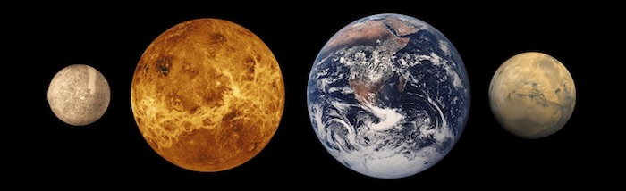

Synestias
We have discovered a completely new type of astrophysical object that we have named synestias. These are fascinating objects that have the potential to revolutionize our understanding of how planets form and evolve. Intrigued? Keep reading to learn about synestias. If you want to know more about a particular topic just hit the question marks. ?
Planets unlimited
The terrestrial planets we see in our solar system today have a lot in common. They are mostly solid, with moderate surface temperatures and the whole mass of each planet is rotating at a single rate. However, planets aren’t always like this. If you heated up, for example, the Earth it would first melt and then the rock at the surface would begin to vaporize. The body would expand, potentially to many times its current size.

If the body was hot enough, and spinning fast enough, the outer edge of the body would be rotating as fast as a satellite in orbit. If the planet continued to get hotter, or spins any faster, the outer edge of the body could not remain rotating at the same rate as the rest of the body. The outer portion of the body would be forced to rotate at near-orbital velocities and form a disk-like region that is continuous with the corotating inner region. ? The rotational and thermal state beyond which a body can no longer rotate at a single rate we call the corotation limit or CoRoL for short. Bodies beyond the corotation limit are unlike any that have previously been studied so we gave them a name, synestias. ?
What is so different?
Once a body is beyond the corotation limit its size and shape are no longer restricted by having to rotate at a single rate. Terrestrial synestias are typically highly extended, many times the size of a cold planet, and can be a wide range of different shapes, from ellipsoids with fins of material extending from the equator to giant red blood cell-shaped structures. ? The cartoon below shows the same mass body but when it is either below (left) or above (right) the corotation limit. The colors indicate the density of the material in the body. The difference in size and shape is substantial.
In order to form synestias bodies are typically very hot and the outer regions of a terrestrial synestia are dominated by rock vapor. There is no surface to the body and the exterior is marked by clouds of molten rock and dust. However, if you were floating out in space looking at the synestia you would probably not be able to see much as the rock clouds are a scorching 2000°C (3700°F) and would be blinding to look at.
The Earth as a synestia
 But how do you make a synestia? During the formation of terrestrial planets, large bodies collide together in giant impacts. These are incredibly energetic events which can vaporize several percent of the impacting bodies and leave a rapidly rotating planetary structure in their wake. A reasonably large fraction of these bodies are above the corotation limit and form synestias. Most terrestrial planets are likely to be forced to become synestias multiple times during formation. ?
But how do you make a synestia? During the formation of terrestrial planets, large bodies collide together in giant impacts. These are incredibly energetic events which can vaporize several percent of the impacting bodies and leave a rapidly rotating planetary structure in their wake. A reasonably large fraction of these bodies are above the corotation limit and form synestias. Most terrestrial planets are likely to be forced to become synestias multiple times during formation. ?
The Earth is no exception and during formation our young planet was likely very different than the temperate, slowly rotating body we know now. The discovery of synestias has important implications for the properties of the terrestrial planets in our solar system as well as distant star systems. In particular, the prevalence of synestias will change our understanding of how the Earth and Moon formed.
It's not just about rocky planets
Terrestrial planets are not the only bodies that could form synestias. Stars, gas giant planets and water worlds all could exceed the corotation limit. The previously unrecognized structure of synestias may hold the key to understanding various aspects of our universe.